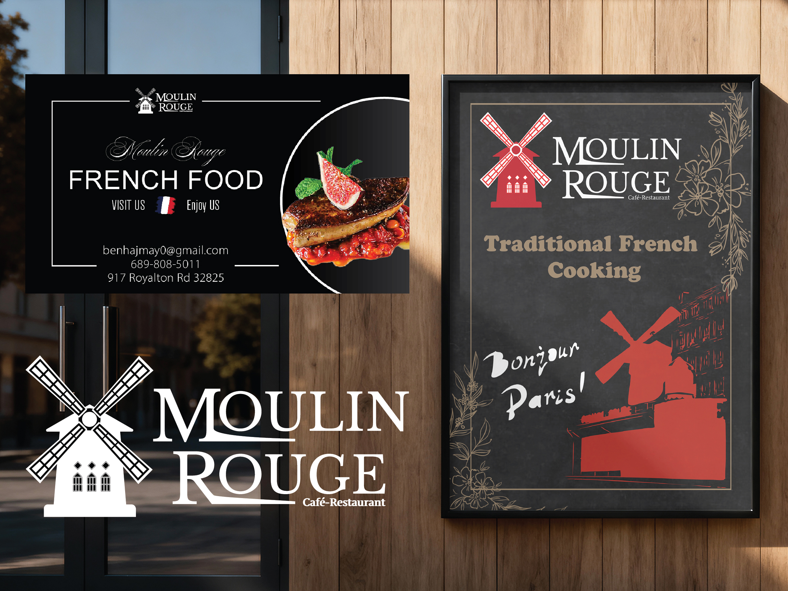
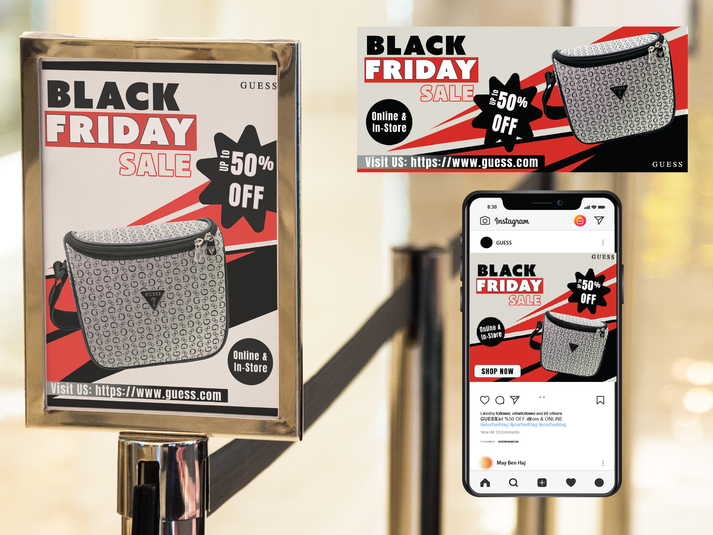
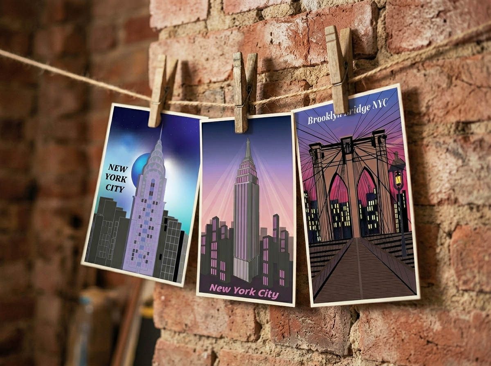
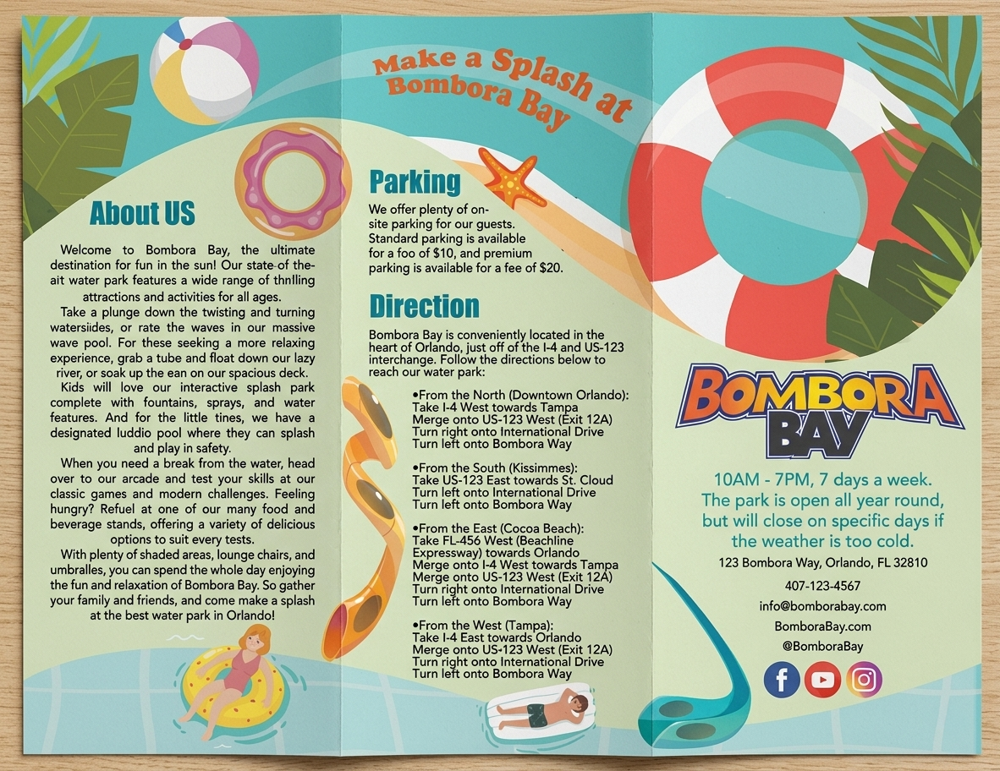
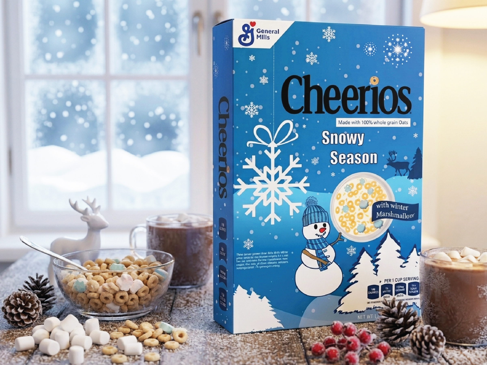
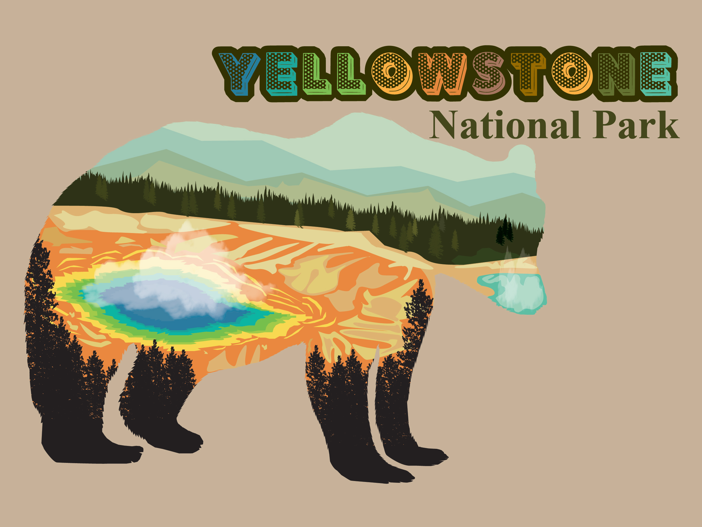

Brand Identity
A full-scale brand identity
system for a contemporary dining
experience. Includes logo design,
corporate typography guidelines,
brand style standards, and
physical marketing collateral
designed to establish a powerful,
unified market presence

Product Ad Campaign
An integrated product
advertising campaign executed
across print and digital
touchpoints. This project
highlights a singular creative
concept successfully scaled for
magazine editorials, marketing
flyers, large-scale retail
signage, and digital web banners.

Architectural Postcard
This series of three vector illustrations captures the architectural grandeur and iconic skyline of New York City through a stylized, vintage-meets-modern aesthetic. The collection focuses on three of the city’s most recognizable landmarks: the Brooklyn Bridge, the Empire State Building, and the Chrysler Building.

Tri-Fold Brochure
A vibrant, family-friendly tri-fold brochure designed for Bombora Bay water park. The goal was to create an engaging, highly scannable marketing piece that serves as an all-in-one guide for park visitors, balancing playful tropical aesthetics with clear information design.

Packaging Design – Seasonal Product Extension
A limited-edition packaging redesign focusing on seasonal engagement. The project features a festive, winter-inspired aesthetic applied to standard packaging constraints. Deliverables include a print-ready dieline and photorealistic 3D product mockups designed to visualize the consumer shelf experience.

Yellowstone National Park Branding Illustration
A modern take on national park memorabilia. This poster utilizes double-exposure illustration to combine iconic Yellowstone imagery—the grizzly bear, pine forests, and thermal springs—into a single, striking composition. Designed with meticulous attention to detail in Adobe Illustrator and Photoshop to achieve professional-grade aesthetic impact.